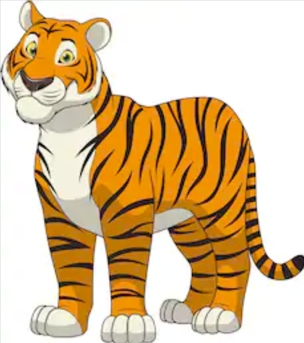

GANs
In this chapter, we'll learn about Generative Adversarial Networks (GANs), a type of artificial intelligence that generates, or creates, new content.
History of GANs
The original idea for GANs was published in 2014 by Ian Goodfellow, who is still widely considered to be the father of GANs. The 2014 paper laid out the basic framework for GANs, but since then, many improvements to the model have been made. A 2015 paper introduced a class of convolutional network (CNN) called DCGANs (deep convolutional GANs), which became the new baseline for all GAN related applications. Further improvements in 2016 and 2017 improved training stability and prevented mode collapse, a condition in which the generator essentially breaks down. Improvements to image quality and detail were also made in 2017 in 2018, which is why the GAN produced images that we see today are much better than images produced a few years ago.
What is a GAN?
The term 'GAN' stands for 'generative adversarial network'. GANs are made up of two neural networks that are working against each other. These two neural networks are known as the generator and the discriminator. Their relationship is adversarial; essentially, the generator keeps trying to trick the discriminator into thinking the content it creates is real, while the discriminator is trying to catch any differences between what the generator is creating and content that actually exists in the real world.
But before we dive too deep into how GANs work, recall what you learned about neural networks in previous chapters. Modeled loosely after the networks in our own brains, neural networks can use regression to establish correlations between pieces of data and use these correlations to accurately classify the data.
Our brains classify images in a similar way. When we look at something, the set of neurons that have been trained to correctly classify that object are activated and we can accurately identify what the object is. Just like neural networks, our brains have been trained to do this since childhood. When you were a toddler, you probably couldn't classify a cat when seeing it for the first time. But after adults repeatedly told you what this furry animal was, your brain learned which neurons to light up to correctly identify the animal as a cat.

The importance difference between regular neural networks and GANs is that neural networks classify and GANs generate. Even if you can identify an object in a picture, generating your own picture of it is a more complicated process. GANs are the next evolution of neural networks because they are able to generate new content that didn't exist previously. And they can create some pretty cool things! Let's look at some examples of things that GANs can generate.

text
audio
How do GANs work?
You probably know that your own brain can generate images. Even if you can't see a cat in front of you, you can probably draw it from your memory. Similar to classification, this is also a learned behavior. Through drawing a cat over and over again and receiving feedback on the quality of your drawing, both from other people and from comparing your drawing to real pictures of cats, your brain is now more aware of which neurons to activate to draw a fairly accurate cat.
GANs are based off of this process. As we mentioned in the previous section, GANS are made up of two adversarial neural networks called the generator and the discriminator. A discriminator is essentially just a normal neural network that classifies images, similar to the neural networks you've learned about before. Generators are pretty much the opposite! Much like a human trying to draw a picture, the generator is trying to create an image that looks convincing enough to fool the discriminator into classifying the image as 'real'.
How does the generator learn how to do this? Well, it's a pretty similar to how your own brain learns! At first, the generator has no idea what it's doing, and it activates random neurons to generate a picture. It then passes this picture to the discriminator, which provides the generator with feedback on its image - in other words, it's telling the generator how close its generated image was to something that the discriminator would accept. With the feedback from the discriminator, the generator doesn't have to randomly guess which neurons to light up anymore. It can now take a more educated guess, and in this constant process of trying to fool the discriminator and receiving feedback, the generator eventually gets very good at creating these images and knows exactly which neurons to light up to get a picture past the discriminator!
Let's simplify things a bit with an example. Your art teacher would tell you that you need to create a Picasso painting. If you do it correctly, you won’t have homework for a week, but if you don’t, you get double the homework. The only problem is that you have never seen a Picasso painting before. So for your first try, you must come up with a random painting, and hope your teacher thinks it is a Picasso.
Of course, you don’t get it right the first time. Your teacher gives you feedback though, like “more color” and “more edges” and “less circles”. Each time you come back to your teacher, you feel like you are getting closer to creating a Picasso painting. Finally, your teacher believes that you've actually created a real Picasso! Her feedback has helped you become so good at imitating Picasso's style that she can't tell the difference between your painting and one that Picasso made. You are now a very good generator, and your art teacher realizes that she has to get better at telling the difference between fake and real Picassos - a better discriminator, in other words!
Play with GANs!
Let's have some fun with GANs!
https://affinelayer.com/pixsrv/
http://ganpaint.io/demo/?project=church